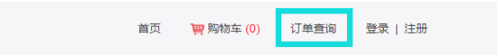
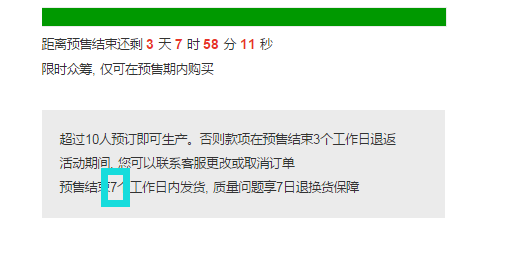
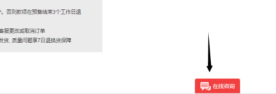
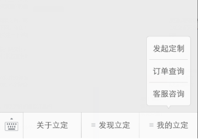

在打开的众筹页面，选择您要预定的商品，如选好t恤的颜色、尺码和数量，点击立即预定购买。支付成功即算预定成功。
立定是一个定制平台，所有产品都限时预售，按需生产。倒计时显示的是距预售结束的时间，预售结束之后不能购买。
因生产限制，所有商品都会有一个最低起订量。只有总的预定数量达到最低起订量众筹才算成功，立定会安排生产发货。达不到最低起订量众筹失败，不生产安排退款。只要所有人预定数量的总和大于最低起定量就行，不是一个人至少要预定的数量。
因为立定提供的定制商品，非质量问题不退不换。选中想要的商品之后，商品购买页下方有“商品参数”标签，里面有尺码表信息。尺码表测量方式不同，存在1到2厘米误差属于正常。一般体型的请重点参考一下胸围信息，特殊体型的关注一下详细尺寸信息。
目前立定支持支付宝和微信支付。电脑端打开支持支付宝和微信扫码支付。手机端新浪微博和手机浏览器打开支持支付宝支付。微信打开支持微信支付（长按支付时的二维码，识别二维码即可安全支付）
代金券可以有企业客户预付款购买发放给员工或合作伙伴，也可以由众筹发起人发放。购买时没有请直接忽略。欢迎大家关注立定微信公众号liding_001,不定期会发放代金券哦~
不一定哦。您可以选择不注册直接购买。但是注册登录后购买，可以更好的跟踪订单的状态。推荐您优先使用注册购买。
下单后没有支付成功，您可以在“我的订单”中选择要支付的订单点击“等待付款”继续支付。该操作仅可在登录的情况下进行。
点击网站页头的订单查询（如下图），输入下单时的手机号即可查询呢，非常方便~
立定会在预售结束之后开始生产。因为不同商品的生产期不同，您在购买的时候可以在购买页说明（如下图）看到我们对该商品的承诺发货期。定制生产过程中可能会有无法预测的事情发生，如果不能按时发货，请谅解ლ(°◕‵ƹ′◕ლ)
预售结束之前您都更改/取消订单，请可以用以下任一方式联系我们客服备注：客服工作时间在9:00-18:00，其他时间请留言。客服上线后第一时间会联系您。
1）在线客服  2）微博私信关注立定官方微博：立定，私信留言。
3）微信客服关注立定官方微信：liding_001，点击“客服咨询”
 4）客服电话TEL：010-61654246（9:00 – 18：00）
如果您有团体定制需求，请通过以下方式联系立定的负责人员。
邮箱：hi@liding.me
QQ：24719452 / 917087729
电话：13910212746 / 18500137084
人人都可以参与立定定制商品的众筹，不设任何门槛。
在立定发起定制商品的预售活动完全免费，无需任何投入。只用提供产品的设计，生产发货客服售后都由立定提供。无需库存没有风险。
发起者可以自由定价，立定会结合市场情况给一个参考价。发起者利润=（发起者售价-成本）*销量
立定提供了丰富的可定制产品供您选择，建议您根据粉丝喜好、购买力定夺。立定拥有丰富经验的采购团队，联合了一线品牌的供应商提供品质可靠性价比的商品。
因为定制商品的特殊性暂不支持打样。如果您有特殊需求，请跟联络的BD说明并支付打样费（打样费根据设计所需制版不同，需要根据设计具体定价）
设计一定要符合受众的喜好。设计的版权归发起者所有。您需要对自己提供的设计负责，保证不侵犯他人版权。
因生产限制，所有商品都会有一个最低起订量。只有总的预定数量达到最低起订量众筹才算成功，立定会安排生产发货。达不到最低起订量众筹失败，不生产安排退款。只要所有人预定数量的总和大于最低起定量就行，不是一个人至少要预定的数量。
预售结束在您提供帐号之后，立定会安排在7个工作日内付50%利润到您指定账户。发货后7个工作日内结算剩下50%利润，最晚不超过预售结束后30天。
立定会在预售结束之后开始生产。因为不同商品的生产期不同，您在购买的时候可以在购买页说明（如下图）看到我们对该商品的承诺发货期。定制生产过程中可能会有无法预测的事情发生，如果不能按时发货，请谅解ლ(°◕‵ƹ′◕ლ)发货之后会有短信提醒。
生产发货客服售后都由立定负责。但由于立定所有商品均是限时按需定制，由于商品的特殊性，不支持除质量问题以外的退换货。。
如果您想支持无理由退换货，需要承担生产和物流成本，该部分成本会在利润中扣除。退货商品同时需要扣除相应的利润所得。
已经结束的活动您随时可以重新再次发起。只要再次达到起订量就可以生产。未经您的允许，立定不会再次发布您的作品。
立定所有商品均是限时按需定制生产，由于定制商品没有库存，所以不支持无理由退换货。质量问题可以在收到商品7日内联系客服退换。。
退换货流程： 第1步：联系客服登记您可以通过在线客服、微博私信、微信客服任一联系方式联系我们客服备注，提供商品质损图片。客服确认后会给您登记。
第2步：质损商品寄回按照售后服务卡上的地址将商品寄回，附一张纸条写清订单编号、收货电话、退换货原因及退/换货要求。
第3步：商品收到客服处理客服确认收货之后会向系统提交退款/补货申请，请您耐心等待。
感谢您对立定的理解与支持。
客服工作时间在9:00-18:00，其他时间请留言。客服上线后第一时间会联系您。
1）在线客服点击页面下方的“在线咨询”按钮
2）微博私信关注立定官方微博：立定，私信留言。
3）微信客服关注立定官方微信：liding_001，点击菜单中的“我的立定”——“客服咨询”
团体定制如果您有团体定制需求，请通过以下方式联系立定的负责人员。
邮箱：hi@liding.me
QQ：24719452 / 917087729
电话：13910212746 / 18500137084
商务合作商务合作、发起众筹请联系：
QQ：24719452 / 917087729
电话：13910212746 / 18500137084